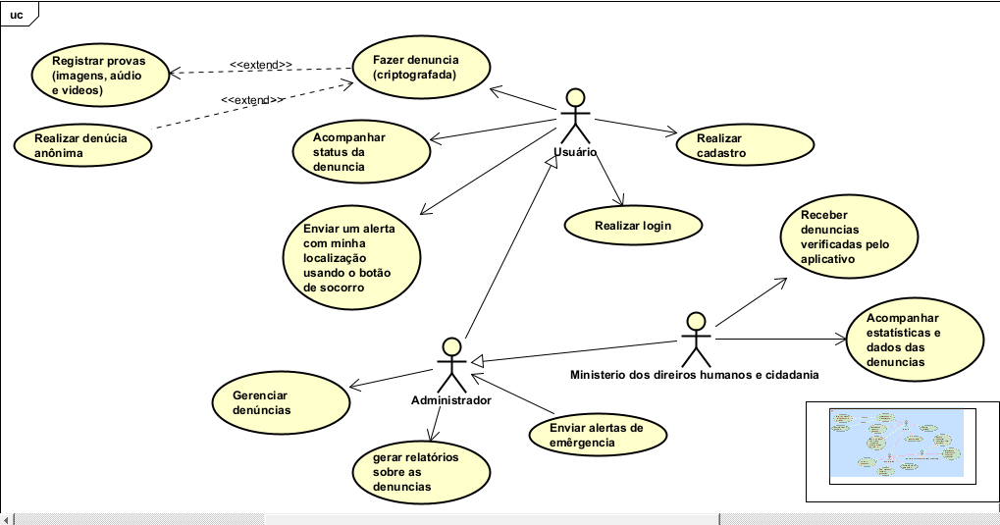

Diagramas do Projeto
A seguir, apresentamos os principais diagramas utilizados para planejar e estruturar o desenvolvimento do aplicativo:
1. Diagrama de Casos de Uso
A criação deste sistema partiu da identificação de um problema social sério: a dificuldade que muitas pessoas enfrentam para denunciar abusos de autoridade, seja por medo, insegurança ou falta de canais confiáveis. Diante disso, desenvolvemos um raciocínio baseado em três frentes fundamentais: quem denuncia usuário, quem gerencia as informações administrador e quem toma providências oficiais (Ministério dos Direitos Humanos e Cidadania)
Começamos definindo o usuário, que é o ponto de partida de todo o sistema. Ele precisa de um espaço seguro para se expressar, por isso, pensamos em recursos como o registro de provas (áudio, vídeo e imagens, a denúncia criptografada e a possibilidade de realizar denúncias anônimas. Também incluímos a função de acompanhar o status da denúncia, para que ele tenha transparência no processo, e o botão de socorro com geolocalização, para situações de emergência.
Em seguida, introduzimos o papel do administrador, que atua como elo entre o usuário e os órgãos oficiais. Ele é responsável por receber, verificar e organizar as denúncias, além de gerar relatórios com base nos dados coletados e enviar alertas de emergência quando necessário. Sua função é garantir que as informações sigam com responsabilidade e critério.
Por fim, conectamos o sistema ao Ministério dos Direitos Humanos e Cidadania, que recebe apenas as denúncias verificadas pelo administrador. Esse órgão é responsável por acompanhar as estatísticas e dados oficiais, podendo usá-los para planejar ações governamentais e políticas públicas de combate a abusos.
Essa linha de raciocínio — do cidadão ao governo — foi essencial para garantir que o sistema fosse efetivo, seguro e transparente, criando uma ponte tecnológica entre sociedade civil e poder público. O diagrama de casos de uso, então, representa graficamente essa estrutura de funcionamento, destacando todas as funcionalidades e relações entre os atores envolvidos.
